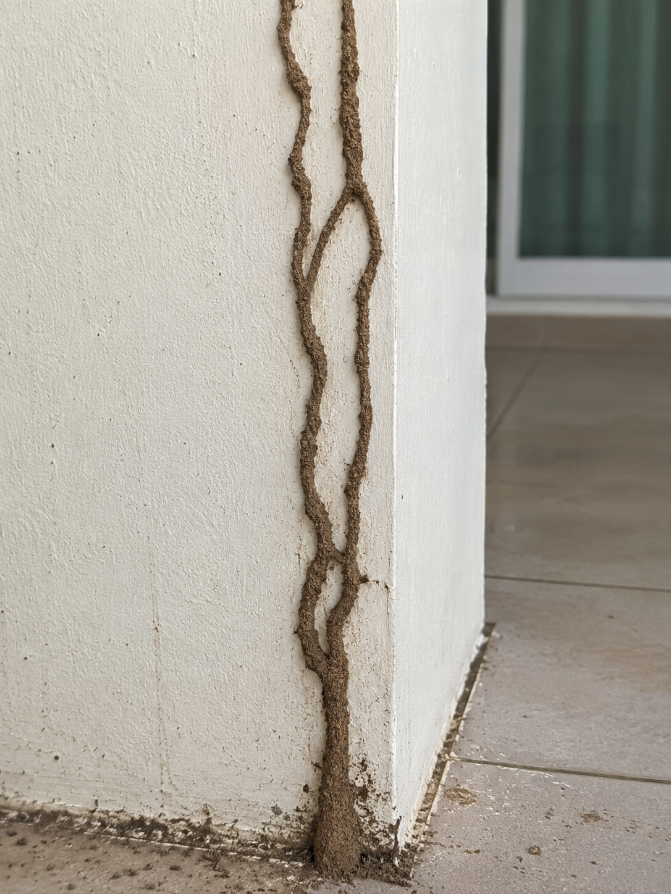
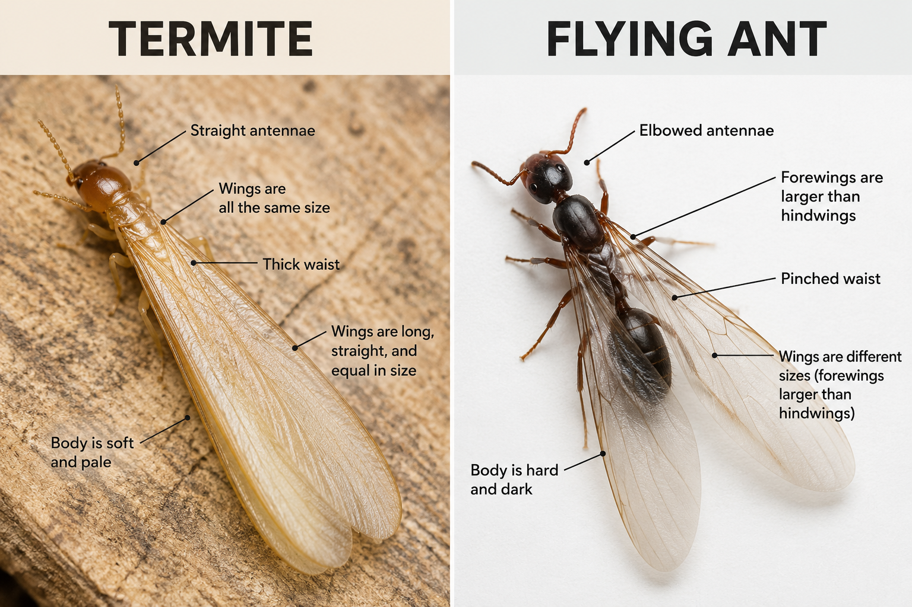
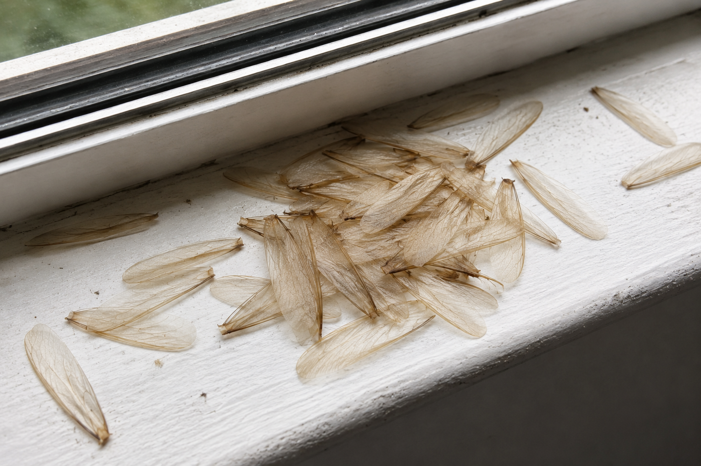
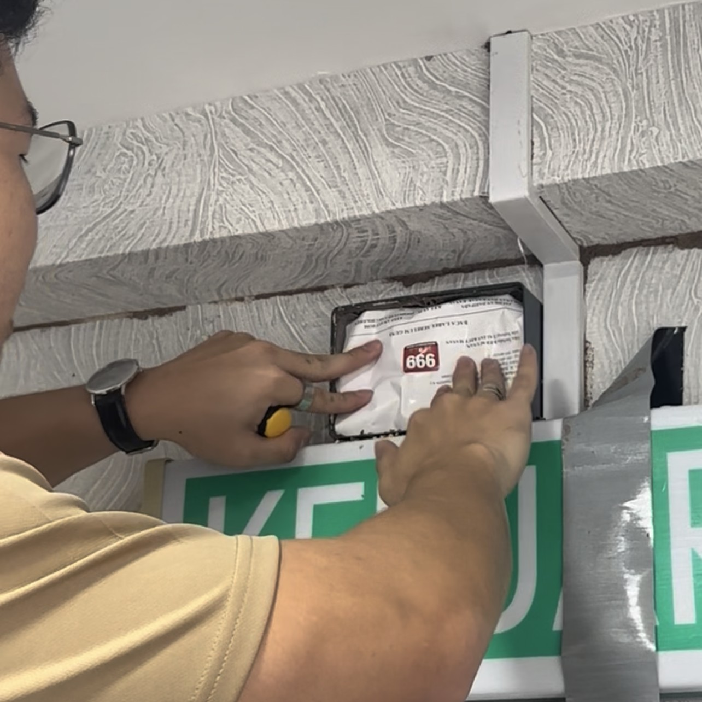

Found Termites in Your House? Here's What to Do First
The single most useful thing you can do in the first ten minutes is
nothing. Don't spray it, don't break it open, don't scrape it off the wall. What you're looking at is
evidence, and how you handle it in the next few minutes decides how straightforward the rest of this
gets.
By KK Pest Control·Licensed operators in Sabah since 1991·12 August 2026·7 min read
How to tell it's actually termites
Most people don't find termites. They find something else and work backwards: a skirting board that
sounds hollow, paint blistered in a strange line, or a scatter of translucent wings on the floor
after a storm. The insects themselves stay hidden, which is precisely what makes them expensive.
Four signs are worth knowing:
Mud tubes. Pencil-width tunnels of soil and saliva running up a wall, a pillar, or the
outside of a foundation. Subterranean termites dry out and die in open air, so they build covered
highways between the soil and their food. A mud tube is the clearest single indicator there is.

🧱PHOTO: a termite mud tube running vertically up a wall, pillar or foundation. Close enough that the soil texture is visible, wide enough to show it's on a building. The single most important image in this article.../../images/blog/found-termites-what-to-do/mud-tubes.jpg
Mud tubes are the clearest single sign of subterranean termites. Leave them intact.
Hollow-sounding timber. Termites eat wood from the inside out, following the grain and
leaving the outer surface intact. Tap along a skirting board or door frame with a knuckle. Infested
sections sound papery and thin compared with solid ones.
Blistered or rippled paint. Where termites have eaten close to the surface, paint and
plaster lose their backing and start to bubble. It's easily mistaken for damp, and in a humid climate
it usually gets mistaken for exactly that.
Discarded wings. After heavy rain, mature colonies release winged reproductives to
start new nests. They fly, land, shed their wings and crawl off. You rarely see the insect. You see the wings,
small and equal-sized and slightly iridescent, collecting along windowsills and under lights.
Termites or flying ants?
This is the most common misidentification, and locally the winged termites are usually called
kelkatu. Three features separate them reliably:
Antennae. Termites have straight, beaded antennae. Ants have a visible elbow
bend.
Waist. Termites are broad and uniform from thorax to abdomen. Ants have a sharply
pinched waist.
Wings. A termite's four wings are all the same length and detach at a touch. An
ant's front wings are clearly longer than its rear pair.

🔍DIAGRAM: side-by-side termite swarmer vs flying ant, with the three differences labelled — straight vs elbowed antennae, thick vs pinched waist, equal vs unequal wings. Worth commissioning properly, since comparison diagrams earn image-search traffic and get reused by other sites (usually with a link back).../../images/blog/found-termites-what-to-do/termite-vs-flying-ant.png
The three reliable differences between kelkatu (termite swarmers) and flying ants.
If there's a pile of shed wings and no insects to be seen, that's termites. Ants don't shed wings the
same way.
What a swarm actually means
The winged termites are called alates. They are reproductives, produced by a colony that has reached
maturity, and their job is to leave, mate, and start colonies of their own. Guides written for Europe
or North America will tell you this happens in the warmer months. In Sabah there is no cool season for
the weather to warm up from, so the trigger here is heavy rain and humidity rather than temperature,
which is why swarms tend to follow a downpour.
A swarm indoors tells you a mature colony is somewhere within flying range. That is not the same as
saying it is inside your house. It might be under your floor, in a neighbouring unit, or in a tree
stump on the boundary. Working out which of those it is takes an inspection, but seeing alates indoors
does mean an established colony is close enough to matter.
Why termites are relentless in Sabah
Termite advice written for Europe, Australia or the northern United States assumes a seasonal
rhythm. Colonies slow in winter, activity picks up in spring, and inspections get scheduled around it.
None of that applies here.
Kota Kinabalu is warm and humid year-round. There's no cold season to suppress colony activity and no
extended dry period to make soil inhospitable. A subterranean colony that establishes near a Sabah
property feeds continuously, every month of the year. So "we'll look at it after the rainy
season" isn't a delay of a few dormant months. It's a delay of continuous feeding.
Colonies also outlast the people worrying about them. Workers and soldiers live roughly one to two
years, but the king and queen survive for decades, with the longest-lived queens reported at thirty to
fifty years. A colony does not age out or wander off. Left alone, it keeps producing replacements for
every worker that dies, and it keeps feeding.
Local context
Building style matters as much as climate. Older kampung houses with timber structural elements in
ground contact, shoplots sharing party walls with neighbouring units, and ground-floor condominium
units backing onto landscaped soil each present a different entry problem. Shared walls in
particular mean a neighbouring unit's untreated infestation is your problem too.
Five things to do right now
1. Leave it alone. Don't spray it, don't break the tubes, don't scrape anything away.
Every one of those makes the next step harder, for reasons covered below.
2. Photograph it. Several shots. One close enough to show detail, one wide enough to
show where in the room it is. If you disturbed anything before reading this, photograph it anyway. It
still helps.

PHOTO: shed termite wings collected on a windowsill, floor or under a light fitting after rain. Very recognisable to anyone who has seen it — strong 'that's exactly what I found' moment.../../images/blog/found-termites-what-to-do/discarded-wings.jpg
Shed wings after heavy rain usually mean a colony is swarming nearby.
3. Note exactly where it is. Which wall, which floor, how far from an external door or
a wet area like a bathroom or kitchen. Termites enter along predictable routes, and the location of
what you found narrows down where to look.
4. Check the rest of the property, gently. Tap skirting boards, door frames and window
frames on the same floor, especially near bathrooms, kitchens and any wall meeting soil outside. You're
building a picture of extent, not attempting a survey.
5. Get it identified before anything is treated. Different termites live differently,
and the treatment that suits one is wasted on another. Identification comes first, because everything else
depends on it.
Mistakes that make it worse
Spraying what you can see
The termites visible to you are a tiny fraction of the colony, and the nest is usually in soil some
distance away. Insecticide kills the foragers in front of you and never reaches the nest. Worse,
the colony registers the disturbance, seals that route and reopens somewhere else in the structure,
often somewhere you can't see. You've spent money, lost the trail, and made the property harder
to treat properly.
Breaking open the mud tubes
Understandable, and counterproductive. Intact tubes tell an inspector the direction of travel and
roughly how active the route is. Broken ones tell them very little, and the colony simply rebuilds
elsewhere.
Assuming a repair is a solution
Replacing a damaged skirting board or door frame addresses the symptom. If the colony still has
access, the new timber is just fresh food. Repairs belong after treatment, not instead of it.
What a professional inspection involves
An inspection is diagnosis, not treatment. The purpose is to establish four things: whether the activity
is live or historic, which species is involved, how far it extends, and where the colony is likely
accessing the building from. Only once those are known does it make sense to talk about treatment.
That is the part where judgement matters, because choosing the wrong approach for the species and the
building can mean paying for a treatment that was never going to work.

🔦PHOTO: a KK Pest Control technician inspecting a property — uniformed, using a torch or moisture meter. An original photo of your own team, not stock. You may already have a usable frame in images/work2.jpg or images/dewan.jpg.../../images/blog/found-termites-what-to-do/inspection.jpg
An inspection establishes species, extent and entry points before any treatment is discussed.
Common questions
Should I spray termites I find in my house?
No. The termites you can see are a small fraction of the colony, and the colony itself is usually in the
soil somewhere else entirely. Spraying kills the visible workers without touching the nest. It also
teaches the colony to avoid that area, so they seal off the route and reopen somewhere you cannot see.
That makes the infestation harder to trace and harder to treat, and you lose the evidence an inspector
needs.
Are the flying insects that appear after heavy rain termites or ants?
Look at three things. Termite swarmers, called kelkatu locally, have straight bead-like antennae, a
thick body with no narrow waist, and four wings of equal length that snap off easily. Flying ants have
elbowed antennae, an obviously pinched waist, and front wings noticeably longer than the back pair. A
pile of shed wings on a windowsill or floor after rain almost always means termites, not ants.
What does it mean if I see flying termites in my house?
It means a mature colony is within flying range and has released reproductives, called alates, to start
new colonies. It does not automatically mean the colony is inside your house, because alates travel
some distance before landing. In Sabah these swarms usually follow heavy rain rather than a change of
season. Either way it is worth having the property checked, because a colony only produces alates once
it is well established.
How quickly do termites damage a house?
Damage is gradual rather than sudden, but it is continuous, and in Sabah it does not pause for a dry
season. A mature subterranean colony contains hundreds of thousands of individuals feeding around the
clock. Most owners only notice once a skirting board gives way or a door frame goes soft, and by that
point the termites have usually been active in the structure for many months.
When this needs a professional
If you've found mud tubes, hollow timber, or shed wings indoors, the honest answer is now. Not because
the situation is an emergency, but because everything about it gets more expensive with time and
nothing about it resolves on its own. A colony doesn't move out.
What you gain by having it looked at early is mostly information: whether it's active, what species,
how far it's spread, and whether it needs treating now or monitoring. Sometimes the answer is that it's
old damage and nothing is currently living there. That's worth knowing too.
KK Pest Control
Licensed pest management operators based in Kota Kinabalu, serving homes and businesses across
Sabah since 1991. Our technicians hold current operator licences and treat properties from kampung
houses to commercial kitchens.
Not sure whether it's active?
Send us a photo of what you found. A free inspection establishes the species, the extent, and whether
it needs treating now or watching.